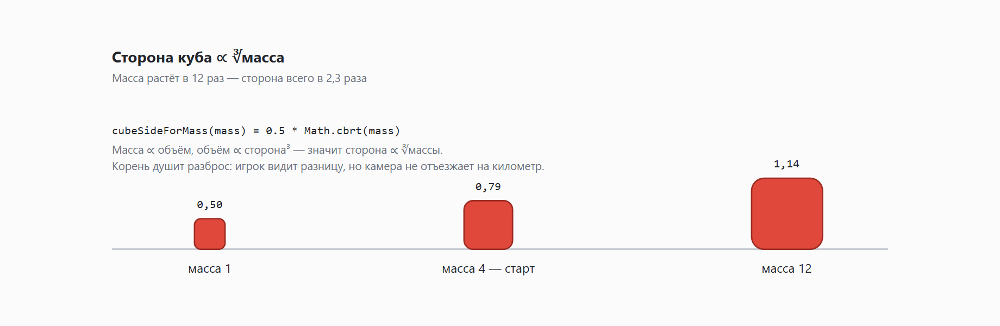

У моего героя нет здоровья, ключей и очков. Есть масса, и это всё сразу
Я делаю браузерный 3D-платформер. Игрок катает красный желейный куб по каменным плитам, парящим в небе. У куба нет полоски здоровья, нет инвентаря с ключами и нет счётчика очков.
Не потому что я минималист и не потому что так задумывал с самого начала. А потому что в какой-то момент посмотрел на черновик спецификации и понял, что мне придётся писать, отлаживать и балансировать три отдельные системы. Одну я осилить был готов. Три — не очень.

Лень как метод проектирования
Черновик выглядел так, как выглядят все черновики: здоровье (сколько ударов держим), ключи (что открывает двери), очки (за что хвалим в конце уровня). Три величины, три элемента интерфейса, три набора правил — и три способа запутать человека в казуальной игре, где уровень проходится за полторы минуты.
Вместо этого осталась одна величина: масса, измеряется в каплях желе.
- это здоровье — шип срезает каплю;
- это размер — чем больше масса, тем крупнее куб;
- это ключ — тяжёлый продавливает весовую плиту, лёгкий пролезает в щель;
- это оценка — звёзды считаются по массе, донесённой до финиша.
Весь интерфейс игры — одно число в углу экрана. Я не то чтобы этим горжусь, но отлаживать это счастье было заметно приятнее, чем три независимые подсистемы, которые норовят рассинхронизироваться.
Кубический корень, потому что школьная геометрия
Правила массы — тридцать строк без единой зависимости, чистый TypeScript:
export const MIN_MASS = 1;
export const MAX_MASS = 12;
export const START_MASS = 4;
export const CUBE_SIZE_FACTOR = 0.5;
export function clampMass(m: number): number {
return Math.min(MAX_MASS, Math.max(MIN_MASS, m));
}
export function cubeSideForMass(mass: number): number {
return CUBE_SIZE_FACTOR * Math.cbrt(mass);
}Корень тут не для красоты формулы. Масса пропорциональна объёму, объём — кубу стороны, значит сторона растёт как корень кубический из массы. Физически честно, но ценно другое: корень душит разброс. Между массой 1 и массой 12 разница в двенадцать раз, а сторона отличается всего в 2,3 раза.
Игрок разницу видит. Камере при этом не приходится уезжать в стратосферу, чтобы объевшийся куб влез в кадр.

Умереть нельзя, можно только похудеть
Главное правило игры я сформулировал именно так. Максимум, что грозит герою, — диета.
- Шип срезает каплю и отбрасывает куб. Срезанная капля остаётся лежать рядом — развернись и подбери.
- Падение в пропасть: возврат на чекпоинт и минус капля. Но при массе 1 штраф не применяется — ниже единицы масса не опускается никогда.
- Любой уровень проходим с массой 1. Без звёзд, зато проходим.
Из этого бесплатно вываливаются три свойства, за которые обычно приходится воевать отдельно.
Невозможно застрять навсегда. Нет состояния «прошёл девять десятых уровня, понял, что ресурса не хватает, начинай сначала». Такое состояние я в чужих играх ненавижу примерно с детства.
Не страшно экспериментировать. Цена ошибки — одна капля, которая обычно лежит в двух шагах позади. Игрок пробует прыжок, а не сохраняется перед ним и не проверяет, точно ли он сохранился.
Есть повод переигрывать. Звёзды ничего не открывают и не блокируют следующий уровень. Они просто молча сообщают, что можно было аккуратнее.
Дальше механики придумались почти сами
Вопрос всегда был один и тот же: что в этом мире умеет толстый куб и чего не умеет худой.
| Препятствие | Тяжёлый куб | Лёгкий куб |
|---|---|---|
| Весовая плита-кнопка | продавливает | не продавливает |
| Хрупкий пол | проламывает | проходит |
| Вентилятор | стоит как влитой | сдувается, подбрасывается выше |
| Щель между плитами | не пролезает | пролезает |
Таблица нарочно симметрична: ни одно состояние не «лучшее». Толстым проходятся одни места, худым — другие, и уровень заставляет менять массу в обе стороны. Поэтому в игре есть не только шипы, отнимающие каплю, но и плита «отщипнуть», где игрок добровольно оставляет каплю, чтобы пролезть. И может забрать её на обратном пути, если не забудет. Обычно забывает.
Одно правило, которое я специально не тронул
Высота прыжка не зависит от массы.
Соблазн был приличный: желе, инерция, физика — ну логично же, что жирный куб прыгает ниже. Логично. И катастрофа.
Потому что тогда каждая потерянная капля меняла бы проходимость всего уровня. Я бы либо проектировал каждую платформу под худший случай, либо ловил в багрепортах бессмертное «до платформы не допрыгнуть, а массу взять негде». Прыжок — константа. Именно поэтому обещание «уровень проходим с массой 1» я могу давать, не скрещивая пальцы.
Как визуальная константа внезапно стала геймдизайном
Самое интересное случилось с множителем CUBE_SIZE_FACTOR, и это отличная иллюстрация того, что в геймдеве «просто число в конфиге» не бывает.
Сначала он был равен 1.0. Куб массы 4 получал сторону около 1,59 — то есть был шире однокле́точного разрыва между плитами. Щели, которые я закладывал как целую механику, не работали вообще: куб их перешагивал, не заметив, что это вообще-то препятствие. Механика существовала в спецификации и не существовала в игре — редкий по чистоте случай.
Поставил 0.55: сторона на массе 4 стала ≈0,87, и разрывы наконец превратились в то, что нужно решать похудением.
А потом прилетела просьба, звучавшая абсолютно безобидно: «сделай камни покрупнее, процентов на десять». Проблема в том, что сетка тайлов и коллайдеры завязаны на целые координаты уровня и не масштабируются — трогать их означало пересчитать все уровни.
Поэтому камни я не тронул. Я уменьшил куб: 0.50 вместо 0.55. Отношение 0,50/0,55 ≈ 0,909, то есть куб стал мельче на 9,1% — на глаз ровно то же самое, что камень крупнее на 10%. Заказчик доволен, сетка цела, уровни пересчитывать не пришлось.
Одно только пришлось проверить всерьёз: множитель по-прежнему меньше единицы на штатных массах (масса 4 даёт сторону ≈0,79), значит щели остались проходимыми и механика не сломалась. Одна цифра отвечает и за то, как игра выглядит, и за то, во что в неё играют. Менять её теперь можно исключительно с калькулятором.
Что дальше
Уровни, каждый из которых вводит ровно одну механику из таблицы выше. Обучение — деревянными табличками прямо в мире, без всплывающих окон с текстом, которые никто не читает.
В следующих частях будет техническое и местами позорное: как куб умудрялся спотыкаться на идеально ровном полу, почему доменный слой игры вообще не знает о существовании Three.js, и как я полчаса читал шейдеры, чтобы выяснить, что чёрные тени на кубе — это не тени.
Поиграть можно прямо в браузере, ставить ничего не надо: cubanoid.vercel.app
Пройдёте первый уровень — напишите в комментариях, где было непонятно. Не пройдёте — напишите тем более, это как раз самое ценное.